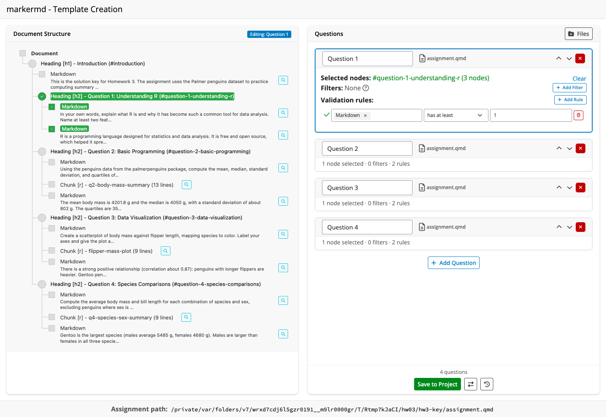
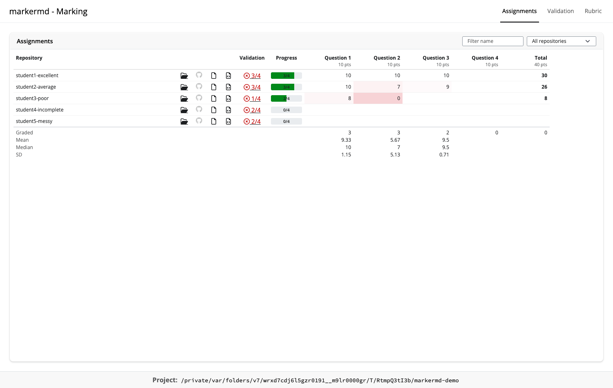
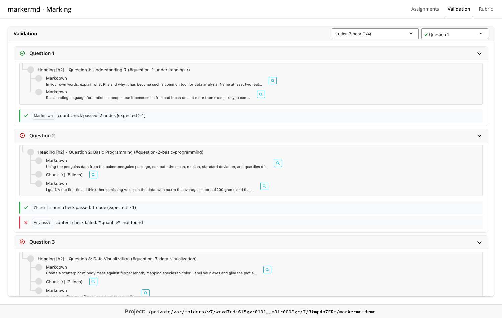
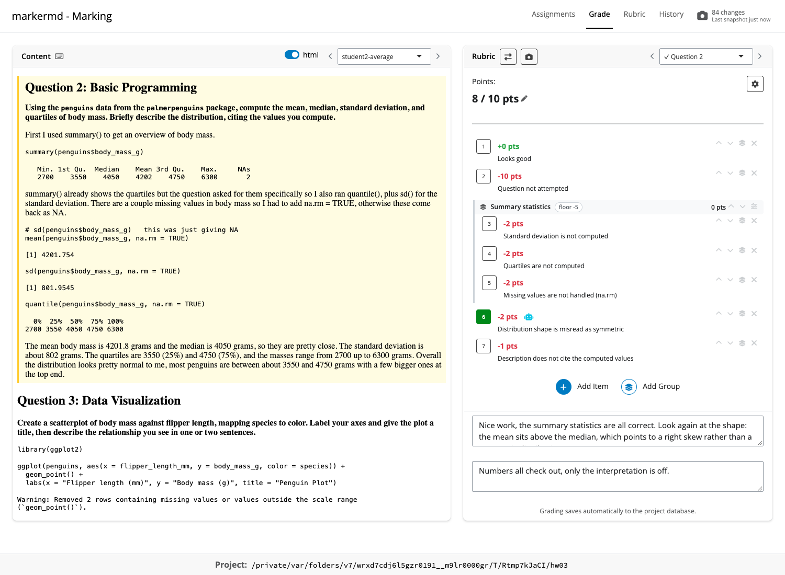

markermd is a Shiny-based grading environment for assignments submitted as git repositories containing Quarto (.qmd) documents, such as the classroom layouts produced by ghclass’s org_grade_assignment(). Each submission is parsed into a document tree (via q2r), validated against the structural requirements of the assignment, and graded question by question with a fast, hotkey-driven rubric interface. The template, the rubric, and all recorded grading live in a per-project SQLite database.
R Markdown (.Rmd) assignments are also supported: pass use_qmd = FALSE to mark().
The package is built around two apps:
-
template()authors a grading template: which document sections are the questions, and what structural rules each answer must satisfy. -
mark()grades a collection of student repositories against that template with per-question rubrics.
Around the apps, a set of helper functions makes the entire workflow scriptable (see Scripting the workflow), and bundled agent skills for Claude Code and Codex can scaffold the template and rubric, repair submissions the strict parser rejects, or apply the rubric across all submissions as a first pass for human review (see Agent skills).
Experimental status
This package is experimental: APIs may change significantly and some features are incomplete.
This project is also an ongoing experiment in “vibe” coding with Claude Code. Not all implementation details have been thoroughly evaluated, and there is a lot of wonkiness throughout the codebase.
Installation
Install the development version of markermd from GitHub:
# install.packages("pak")
pak::pak("rundel/markermd")
# Or using remotes
remotes::install_github("rundel/markermd")Dependencies
markermd relies on q2r for parsing Quarto documents. q2r wraps the Quarto parser via Rust, so installing it requires a Rust toolchain (rustc >= 1.85):
remotes::install_github("rundel/q2r")Quick start
A markermd project is a directory containing the student repositories and, optionally, a solution (key) repository and rendered reports:
hw01/
├── repos/
│ ├── student1-hw01/
│ │ └── assignment.qmd
│ ├── student2-hw01/
│ └── ...
├── html/ # rendered reports, shown while grading
└── hw01-key/ # solution repository (optional)
library(markermd)
# One-time setup: writes .markermd/config.yml, creates the grading
# database, installs the bundled agent skills, and writes CLAUDE.md /
# AGENTS.md project instructions for them
init_project("hw01")
# Author the grading template (questions + validation rules)
template("hw01")
# Grade the student repositories
mark("hw01")init_project() detects the key repository and the artifact directories (the directories of rendered reports), records everything in hw01/.markermd/config.yml, and creates the SQLite database that stores the template, the rubric, and all grading.
project_sitrep() prints an overview of a project’s configuration at any point, and project_set() changes it, including the artifact directories (artifacts =). Re-running init_project() keeps the configured artifact directories rather than adding every new top-level folder; rescan_artifacts = TRUE rebuilds the list.
Template creation with template()
The template app loads an assignment and displays its structure as an interactive tree. The assignment can be a project’s key repository, a single .qmd / .Rmd file or a directory containing one, a saved template, or a GitHub <owner>/<repo>.
Headings are the selectable units: selecting one maps the document section beneath it to a question. Each question then gets validation rules (counts of chunks, markdown blocks, or other node types; content checks; name checks), along with optional filters that narrow which nodes the rules see. Point values are not part of the template; each question’s total is set with its rubric while grading.

When the app is opened on an initialized project, saving writes the template directly into the project database, ready for grading.
Whole-document questions
Some problems belong to no single question: a render setting in the YAML header, global chunk options, a document that does not render. Choosing “The entire document” in the “Add Question” dialog creates a document entry for them. It selects no sections (its filters and rules, if any, run against the whole document) and is written as scope: document in the template YAML (format 3.1).
Add one only when a submission needs it. Paired with rubric scoring that is worth 0 points, marked optional, and not bounded below zero, it records such a problem once as a deduction from the total instead of spreading it across the questions it affects.
Questions on other files
An assignment can consist of more than the document: scripts students write, data, images. The Files button in the Questions card’s title bar picks which of the key directory’s files questions can cover. Hidden files, render output, lock files, project files, and the README are left out unless “Show hidden and filtered files” is on.
“Add Question” opens a dialog asking for the question’s name, its file (the document or one of those files) and, on the document, whether it covers selected sections or the entire document. The file and coverage are fixed once the question is added, and are shown beside its name. Selecting a question on another file shows that file’s source in place of the document tree.
A question on another file covers the whole file:
- It has no rules.
- While grading it,
mark()shows the file from each repository, found by its repository-relative path or, failing that, as a file with the same name elsewhere in the repository. - Validation fails a repository that lacks the file.
Templates with files are written as format 3.2, with a top-level files: list and a file: field on those questions.
Grading with mark()
mark() opens an initialized project and sources everything from it: the student repositories, the stored template, the grading database, and each repository’s rendered reports.
Assignments
The app opens on the Assignments tab, a single table with one row per repository. Each row has links to the repository’s folder, GitHub repository, rendered report, and source, followed by its validation status, its grading progress, and its score per question and in total.
Scores are computed from the rubric selections with the same code as export_scores(). Like the export, the total counts only once every question is graded. Until then the table shows the running sum of the graded questions in grey, while scores.csv leaves total empty.
The class summary is pinned beneath the rows: how many repositories are graded, then the mean, median, and standard deviation per question and for the total. The table filters by name and by status (failed validation, incomplete, complete), sorts by any column, and updates as grading proceeds. Clicking a repository’s validation marker opens its validation results, and clicking a score opens that repository and question in the Grade tab.

Validation
Validation checks each repository against the template’s rules, so structural problems (missing sections, missing chunks, absent content) are visible before any grading starts. The table’s validation column shows how many questions each repository passed, and clicking it opens that repository’s per-question results in a modal.
Each question’s card shows its pass or fail mark and its rule results in the header, with the matched document content collapsed beneath; a question that is expanded stays expanded for the next repository opened. The question selector in the modal’s header, whose entries carry each question’s pass or fail mark, jumps to a question’s results. A content node’s preview button shows the node’s source, with a Back button to return to the results.

Grade
The Grade tab is where grading happens. The left pane shows the student’s rendered report or source, and the right pane shows the current question’s rubric.
- Items toggle by click or by number key. The first ten items of a question get the keys 1-9 and 0; there is no limit on the number of items, and those beyond the tenth toggle by click.
- The score follows from the question’s scoring setup: additive or deduction mode, with optional clamping between zero and the question total. Clicking the score display edits the total, and the gear popover holds the mode and bounds.
- Items that stack can be placed in a named group with a floor or ceiling on their combined points, so every defect is recorded while the deductions stay proportionate. A group can instead be made exclusive, so only one severity tier can be selected. A group’s header shows its live subtotal and flags a bound that was hit, and a badge beside the score opens the breakdown.
- Below the items are two comment boxes: a public, student-facing comment (which also marks the question as graded) and private notes that are never shared with students.
Every action autosaves to the project database.

Rubric items can be added, edited, reordered, and grouped while grading. Add Group creates a group whose settings popover holds its label, bounds, and exclusivity, and each item’s group menu moves it in or out. The rubric pane’s menu offers YAML import and export for editing the rubric outside the app.
Rubric
The Rubric tab shows every question’s rubric in one place, without the documents. For each question it has the scoring settings (total points, positive or negative grading, and the optional score bounds) and the items and groups, all editable as in the Grade tab: descriptions and points, adding, deleting, reordering, grouping, and group settings. In place of its toggle, each item shows how many repositories have it selected. Both tabs edit the same rubric, so a change made in one appears in the other.
History
The History tab is a single timeline of the project’s snapshots and its activity log. A filter narrows the timeline to snapshots, to agents and scripts, or to grading in the app.
Snapshots are named, timestamped copies of the grading state (template, rubric, and marks) kept inside the project database. They are taken automatically before every bulk change (a rubric import, deleting an item that has selections, deleting a group, a restore), and by hand from the camera button or the s key, with a label and a summary of what is about to change.
The activity log records every call of a markermd function that changed the grading state (an import, marks_set(), a restore), alongside the grading done in the app, which is grouped into sessions. Each entry has its summary, what it touched, and who made it: claude or codex when an agent CLI ran it, R otherwise, or whatever MARKERMD_ACTOR names. The same log is available from R with project_activity() and activity_detail().
Selecting a snapshot shows:
- its fields and notes;
- what changed between it and the current state, or any other snapshot: items added, removed, reworded, or re-pointed, selections and comments changed, and every repository’s total before and after;
- the scores it recorded.
From there a snapshot can be restored (undoing every change since to the rubric and marks, or only to chosen questions and repositories), exported to YAML files, pinned, or deleted, and the database file can be backed up.
Selecting an activity entry shows what it changed: the items selected and deselected and the comments and private notes written, per repository and question, plus the rubric or template changes of a call that replaced them. A button selects the snapshot taken just before the entry.
The navbar shows how many selections have been recorded since the latest snapshot and when that snapshot was taken. It turns amber when the number grows large, as a nudge to take a named checkpoint at the end of a session.
Changes made outside the app
While mark() runs, it notices changes made from outside (an agent in a terminal, a script) within about a second:
- The Assignments table and History refresh.
- The repository and question on screen are re-read, keeping an unsaved comment edit.
- Items an agent selected carry a small robot badge until that repository and question are changed in the app.
A changed rubric asks for a page reload, and a changed template for a restart of mark().
Terminal
mark(project, terminal = TRUE) adds a Terminal tab, using the optional shinyterm package. Its “+” menu opens a shell, Claude Code, or Codex in the project root, each agent in its own sandbox confined to the project. The app is then protected by an access token in its URL. A terminal runs as you, so this is for your own machine only.
Scripting the workflow
Everything the apps do is also available headlessly:
| Task | Functions |
|---|---|
| Check submissions |
validate_project(), parse_project(), scan_project()
|
| Move the template to and from YAML |
template_import(), template_export()
|
| Move the rubric to and from YAML, edit items |
rubric_import(), rubric_export(), rubric_item_set()
|
| Move marks to and from YAML, set one pair |
marks_import(), marks_export(), marks_set()
|
| Write scores and feedback |
export_feedback(), export_scores(), export_comments()
|
# Check every student repository against the stored template
validate_project("hw01")
# Templates, rubrics, and recorded marks round trip between the
# project database and editable YAML files
template_export("hw01-template.yaml", project = "hw01")
rubric_import("hw01-rubric.yaml", project = "hw01")
marks_export("hw01-marks.yaml", project = "hw01")
# Record marks for a single repository/question pair
marks_set("student1-hw01", "Question 2",
items = "Looks good",
private_comment = "Quartiles and summary statistics all present.",
project = "hw01"
)The YAML formats are validated against bundled JSON Schemas (see system.file("schema", package = "markermd")) and are deliberately simple enough for LLM tools to author. Marks imports are conservative by default: repository/question pairs that already have grading activity are skipped unless explicitly overwritten.
Snapshots
Every bulk change to the grading state takes a snapshot of the state it replaces, in the same transaction, so a change cannot succeed without its snapshot. The imports take a summary argument, so the reason for a change is recorded with it.
Snapshots can be listed, compared, exported, and restored from R as well as from the History tab of mark(). The template editor also has controls for taking a snapshot and for loading a snapshot’s template.
# A named checkpoint before a multi-step change
snapshot_create("hw01", label = "Before feedback review",
summary = "Re-checking every Q1 selection against the reviewed standard.")
# Imports record their reason on the snapshot they take
rubric_import("hw01-rubric.yaml", project = "hw01", mode = "replace",
summary = "Feedback review: lenient Q1a standard, unrequested items to 0 pts")
# What changed since, and what it did to the grades
snapshot_list("hw01")
snapshot_diff("Before feedback review", project = "hw01")
# Undo (the state before the restore is snapshotted first)
snapshot_restore("Before feedback review", project = "hw01",
summary = "The review's Q1c severities were wrong.")
# An archive of one snapshot as YAML files, and a copy of the database file
snapshot_export("Before feedback review", "backups/before-review", project = "hw01")
project_backup("hw01")Snapshots live in the project database; an existing database from before they were added gains a baseline snapshot when first opened. A few details keep them cheap and traceable:
- Identical parts are stored once.
- An automatic snapshot of an unchanged state is recorded as a note on the latest snapshot rather than as a new one.
-
snapshot_prune()removes old automatic snapshots while keeping every manual or pinned one. -
export_scores()andexport_comments()record which snapshot each export came from. -
project_sitrep()reports the snapshot state, including whether the exported scores are stale.
Exporting results
When grading is complete, export_feedback() writes the final hand-off files from the project database. It runs export_scores() and export_comments(), which can also be called individually:
export_feedback("hw01")Scores
export_scores() writes scores.csv to the project root: one row per repository, one column per question, plus a total column.
- Scores are recomputed exactly as
mark()displays them: each item group’s combined points are clamped to its floor and ceiling, then the question’s selected item points pass through its grading mode and bounds. - Ungraded repository/question pairs export as
NA, and a repository’s total staysNAuntil all of its questions are graded. - A question whose scoring is marked optional counts as graded for every repository, scoring as if no item were selected until something is recorded. The option is “Optional: nothing selected still counts as graded” in the gear popover, or
optional: truein the rubric YAML, and the question’s column in the Assignments table has a small red dot beside its name.
Comments
export_comments() writes each repository’s student-facing feedback to comments/<repo>.md, or to the project’s configured comments directory.
- Each graded question appears as a heading, in template order (document-scope questions first), followed by a bulleted list of its selected rubric item descriptions and its public comment.
- Group bounds are never mentioned. With
group_headings = TRUE, a group’s selected items are listed under a subheading carrying its label. - Private notes are never exported, and a repository with no public feedback gets no file.
Agent skills (Claude Code and Codex)
init_project() installs five agent skills into the project, in two sets: a Claude Code set under .claude/skills/ and a Codex set under .agents/skills/. The agents argument selects one or both, and the default installs both. Both sets follow the Agent Skills format and share the same names, so a skill is invoked as /markermd-fix-parsing in Claude Code and $markermd-fix-parsing in Codex.
-
markermd-scaffold-templatebuilds a starter grading template from the key repository’s assignment document. -
markermd-fix-parsingrepairs student documents that the strict q2r parser rejects. It makes the smallest possible edits on agrading-fixesbranch in each repository, so the original submission stays intact, and flags any substantive change in the document. -
markermd-check-injectionscans every student repository and rendered report for prompt injection attempts: hidden or visible text aimed at an automated grader, found by the deterministicscan_project(). It triages the candidates and reports the evidence for the instructor, and never edits a repository or changes marks. -
markermd-scaffold-rubricdrafts per-question rubric items and scoring from the key, optionally sampling student submissions to anticipate common mistakes. -
markermd-apply-rubricapplies the stored rubric to every student repository as a first-pass machine grading, recording its reasoning as private notes for human review inmark().
init_project() also writes a project instructions file for each selected agent at the project root: CLAUDE.md for Claude Code and AGENTS.md for Codex. The file describes:
- the project layout, the workflow, and the skills;
- the headless entry points;
- the template, rubric, and marks YAML formats;
- the rules for working with student submissions and for keeping the project root clean (working files go under
scratch/, notes worth keeping undernotes/).
An existing instructions file is kept, so it can be customized per project. overwrite_instructions = TRUE replaces it with the packaged version (to pick up a newer markermd’s instructions), and instructions = FALSE skips the step.
See inst/skills/README.md for details and per-user installation.